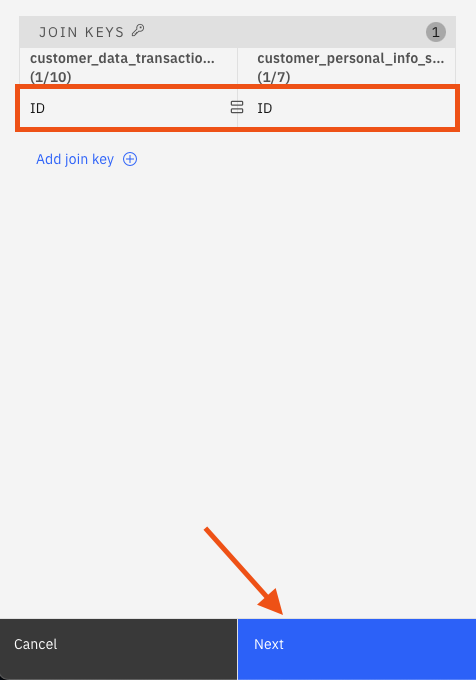
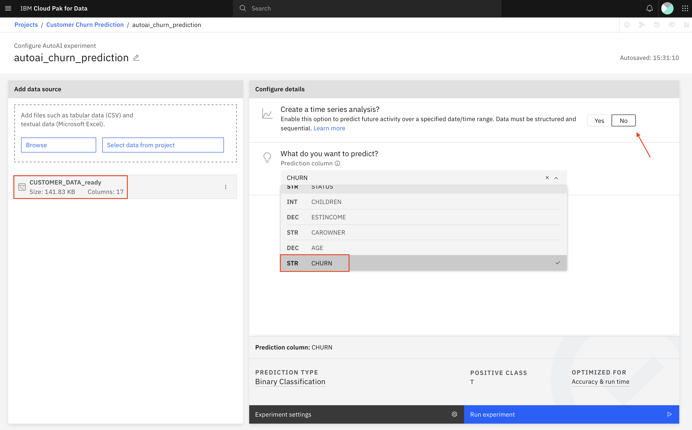
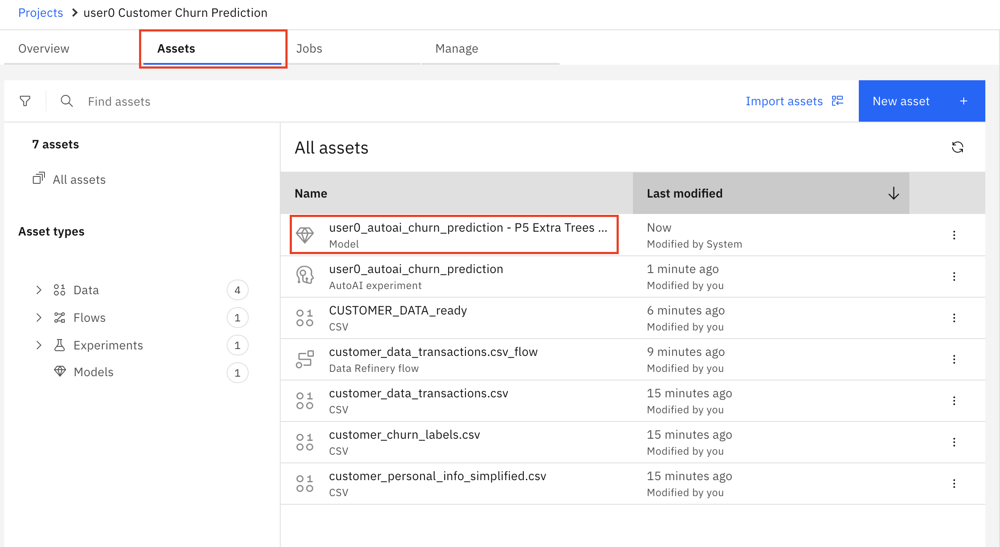

1. Train AI
In this lab, you will assume the role of a Data Scientist, who typically trains and evaluates AI models. The following data sets will be used, download them now:
-
customer_personal_info_simplified: This dataset captures personal information of the customers such as gender, marital status, income, age, and similar data.
-
customer_data_transactions: This dataset captures the transaction data for customers.
-
customer_churn_labels: This dataset captures information about whether a specific customer did churn or not.
Warning
If you have issues downloading the data assets, try downloading them from the section Assets used, as these datasets are included there too.
Creating an AI Use Case
The government of ML Models is managed from AI Use Cases. These AI Use Cases document the whole lifecycle of your models, from the initial planning to the monitoring of models in Production.
This capability is provided by either the service FactSheets or watsonx.governance.
-
Go to menu AI Governance > AI use cases.
-
Click New AI use case.
-
Insert the following information to create your AI Use Case for predicting your customers' churn:
- Name: "<YourUser> Churn Prediction" (for example: user0 Churn Prediction)
- Risk Level: Set whatever risk level you want for this use case
- Inventory: AI_inventory
- Purpose: "Predict if customers are going to churn"
- Status: "Awaiting development"
- Tags: "Churn"
Info
Note all the available values in Status. This field documents all the lifecycle stages
Then click Create.

-
Your new AI Use Case has been created. All the deployment, training, promoting, and monitoring actions related to this use case will be documented here. Click Lifecycle.
Info
You could create different approaches to this use case, and track your models in the approach each of them is using. In this workshop we'll just use the Default approach, so no additional action is needed.
Data Preparation with Data Refinery
Before creating your ML model, you will prepare data using Data Refinery, a visual UI-based tool that enables users to interactively discover, cleanse and transform data with over 100 built-in operations.
Info
In IBM Cloud Pak for Data, a Project is how you organize your resources to achieve a particular goal. A project allows for high-level isolation, enabling users to package their project assets independently for different use cases or departments. Your project resources can include data, collaborators, scripts, and analytic assets like notebooks and models.
-
Log in CP4D with your assigned user. Contact your instructor if you haven't been assigned one.
-
Go to the Projects section by clicking the Navigation menu and selecting Projects > All projects.

-
Click on New project to create a new project.

-
Select the Create an empty project option.
-
Insert the following Project Name: <YourUser> Customer Churn Prediction where
is your username. For example: "user0 Customer Churn Prediction". Then Click Create. -
Now that the project is created, the Data Scientist will shop for relevant data assets that can help them with training this AI model for customer churn prediction. Click the Find and add data icon.
Info
In a real case, the Data Scientist would search for relevant assets in CP4D Catalogs. However, for simplicity sake, we'll use the 3 datasets referenced earlier.
-
Either drag and drop or browse the customer_personal_info_simplified.csv file that you downloaded into the Drop files here or browse box. Wait for the file to upload to the project. Then, repeat it for the other csv files:
-
Verify the 3 CSV files have been uploaded to your project by clicking the Assets tab. You should see all 3 files under the Data assets section:
- customer_data_transactions.csv
- customer_churn_labels.csv
- customer_personal_info_simplified.csv
-
Next step is to shape the data to get it ready to be used for training ML models.
Info
Cloud Pak for Data supports multiple approaches for data shaping and transformation. In this lab, you will use Data Refinery to cleanse and shape the data with a graphical flow editor and create a joined data set of the Customer Data asset and the labeled churn data set.
Click New Asset and select Data Refinery.
Tip
Alternatively, you could access Data Refinery by clicking on the open and close list of options menu (3 vertical dots) next to a data asset in your project and then selecting Refine.
-
Select Data asset and then select the customer_data_transactions.csv data set and click Select.
-
This loads the dataset in Data Refinery. Note the tabs Data, Profile, and Visualizations.
Warning
If the Profile and Visualizations tabs are grayed out, wait for some time as the asset is being loaded.
-
The Data tab displays the data and enables you to apply a number of common operations to cleanse and shape the data in a graphical editor. It also supports deploying R library operations, functions, and logical operators via the command line.
-
The Profile tab shows useful summary statistics including a histogram of each of the data fields. This is useful to understand the statistical distribution of the data as well as potential skew that may exist.
-
The Visualizations tab provides over 20 customizable charts to provide perspective and insights into the data.
-
-
Change the ID column type from Integer to String. This is needed because in the next step when you apply a join of this data and the other data sets, need the column types to match. To do so, click on the 3-dot menu next to the ID column, select Convert column type and then select String type and click Apply.
-
Next, you will add a step to join this data set with the customer_personal_info_simplified.csv dataset to capture additional features that may impact the likelihood of a customer to churn. Click the New Step button which will open the operations column, scroll down to find the Join operation and click Join. You can also type Join in the Search operations field and it will filter the list of operations to find Join.
-
On the Join operations window, keep the type of join as "Left join" then click Add data set.
-
On the Data set page, click Data asset, select the customer_personal_info_simplified.csv dataset and click Apply.
Tip
In case you’re not familiar with the Left Join operation, Data Refinery provides an explanation of what that operation does; specifically, a Left Join returns all rows in the original data set and returns only the matching rows in the joining dataset.

Back on the Join operation window, click Select column to specify ID as the field to use for joining the two data sets. Then click Next.

-
On the next window, it shows all the fields that will result from the join operation. At this point, you can remove fields you do not wish to include in the final data set. For this lab, keep all the fields selected and click Apply.
-
Repeat the process (previous 3 steps) to apply a join operation on the resulting data set and the customer_churn_labels.csv dataset. The data set to join is customer_churn_labels.csv, and the join field is ID.
-
Note that the Data Refinery flow has been augmented with all the executed operations. As you perform more operations to shape the data, they get added to the Data Refinery flow. For this lab, we will just perform the Join operations but typically, you’d perform several other operations to transform the data and make it ready for analytics insights and training machine learning models.
Info
In a real-case scenario, data typically requires several more operations to cleanse by removing nulls, filtering rows with missing data, aggregating data across fields, and/or applying a number of different operations. In this lab, the dataset we’re using is already in good shape and the only operations you will apply is to join the customer data (which was already a join of customer personal information and transaction data) and labeled churn data set.
Take a minute to browse the set of supported operations.
Tip
This video and this tutorial provide more examples and details of operations for data transformation using Data Refinery.
-
Change the output file name. To do so, click the Settings button.
-
Go to the tab Target data set. Then click Edit properties.
-
In the Data asset name field, insert CUSTOMER_DATA_ready. Then click Save and Apply.
-
Once you’ve applied all the operations to transform the data and configured the output, next step is to save the flow and create a job to apply this data refinery flow against the complete data set. To do so, click on Save and create a job.
-
Provide a Name for the job <YourUser> drjob, and click Next.
On the Configure tab, review the Environment and keep the default selection Default Data Refinery XS, then click Next. For jobs that require more resources, you can select a larger Environment to run the job.
On the Schedule tab, keep the Schedule slider set to off, and click Next. In this lab, we don’t need to run the data refinery job at a given schedule but we’ll manually run it as needed and that is why we kept the default selection as off.
On the Notify tab, keep the Notification off as default. Click Next.
On the Review and create tab, review the job details and click Create and run.
-
After you click Create and Run, navigate to the jobs view to monitor progress by clicking on the Navigation menu and selecting Jobs.
-
On the Jobs page, you can filter the view by selecting whether you want to look at Active runs, Jobs with active runs, Jobs with finished runs, or Finished runs. Feel free to filter the different views to see the results. Initially, the job will appear in the view Jobs with active runs and when it completes, the job will appear in the view Jobs with finished runs. Feel free to click on the job name and review the details and status of the run(s).
-
Navigate back to the project and click the Assets tab. Note the Data Refinery flow, customer_data_transactions.csv_flow which is now a project asset and the newly created data asset, CUSTOMER_DATA_ready.csv, which was created by running the Data Refinery flow that joined the customer data transactions with the customer personal information and churn labels data sets. Click the CUSTOMER_DATA_ready.csv (red arrow) asset to review the data.
Info
At this point, you have collected data from various sources and leveraged Data Refinery to shape the data using a graphical editor. Now, the data is ready to be used for training a machine learning model for predicting the likelihood of a customer to churn based on his/her demographic and transaction data.
Train AutoAI Model for Churn Prediction
In this section, we illustrate how to leverage AutoAI to quickly train multiple AI models for churn prediction and select the pipeline that delivers best performance.
-
Navigate back to your project and click Assets tab, click New asset + and select AutoAI.
-
Provide the following name to your AutoAI experiment: <YourUser>_autoai_churn_prediction, keep the default Compute configuration and click Create.
Tip
You could select a different configuration if you needed to assign more resources for your AutoAI experiment.
-
On the AutoAI add data sources page, click the Select from project button since you will be using the dataset you had created earlier with Data Refinery.
Tip
You could also click Browse to upload data from your local machine.
-
Click Data asset and select the checkbox to select the CUSTOMER_DATA_ready dataset. Then click Select asset.
-
On the next page, you will see the selected dataset and you will be prompted to select whether you want to Create a time series forecast which is supported by AutoAI. Click No since customer churn prediction is a classification use case and not a time series forecasting use case.
Once you click No, you will get the option to select which column to predict. Scroll down the list to select the CHURN column. At this point, we have provided the data set, indicated it is a classification use case and selected the prediction column. Click Run experiment (blue button) to kick off the AutoAI run.
Tip
Note that you can click the Experiment settings to review the default settings and change some of the configurations if you wish. Review those settings as they’re very informative.

-
AutoAI runs for a few minutes on this dataset and produces a number of pipelines as shown in figure below including training/test data split, data preprocessing, feature engineering, model selection, and hyperparameter optimization. You can dig deeper into any of the pipelines to better understand feature importance, the resulting metrics, the selected model, and any applied feature transformation.
Tip
While waiting for AutoAI’s run to complete, you could review the AutoAI Documentation.
Specifically, review the AutoAI Implementation Details to understand what algorithms are supported, what data transformations are applied and what metrics can be optimized.
The AutoAI run will take 4-5 minutes to complete. Once complete, please spend a few minutes exploring the dashboard:
-
Switch between the Experiment details and the Legend information (annotated with red rectangles in previous figure) to better understand the generated Relationship map.
-
Switch between Cross Validation and Holdout results by clicking the icon next to Cross Validation (annotated with red oval in previous figure) to see how the pipeline ranking changed depending on which data is being evaluated.
-
Swap the view between the Relationship map and the Progress map (annotated with blue oval in previous figure) to see the different views of the AutoAI pipeline creation process.
-
Click on the top pipeline (annotated with blue rectangle in previous figure) to review the details for that pipeline. AutoAI reports several valuable evaluation criteria like several performance metrics (Accuracy, Area under ROC, Precision, Recall, F1) as well asthe confusion matrix, Precision Recall Curve, and feature importance. If the pipeline also included feature engineering (or feature transformation), the pipeline details will explain what transformations were applied. Close the pipeline details window by clicking x top right of window.
After reviewing the trained pipelines, you can decide which one you’d like to save as a model to deploy. Assuming you select the first pipeline, mouse over the first pipeline and click Save as (annotated with red arrow in figure above).
-
-
On the Save As page, select Model, keep the default name, and click Create.
Tip
Note that you could also save the pipeline as a Notebook which you can customize further.
Track your Model in the AI use case
-
Navigate back to the project assets by clicking your project's name and then clicking the Assets tab.
Click on the name of your saved model <YourUser>_autoai_churn_prediction - P5 Extra Trees Classifier - Model to open it.

-
Feel free to check all the information available now; as the lifecycle continues, more sections will be populated.
Info
This view contains all the governance information of your model. It includes information about the use case, how the model was trained, which data was used to train it, the evaluations of the model, the monitoring alerts...
-
Click Track in AI use case.
-
Select your AI Use Case then click Next.
-
You'll use the Default approach. You could've created different approaches for the use case. Click Next.
-
You can set a version number to this specific model. In this case, it's not been tested yet, so select version 0.0.1. Then click Next
-
Click Track asset.
Info
The information of your model indicates that the model is in the Development phase, as it has not been deployed for testing yet.

-
Check your AI Use Case. Go to menu AI Governance > AI use cases*.
-
Then open your use case.

-
Go to the Lifecycle tab. This tab shows which assets are being used in each stage of the model's lifecycle. Note that your trained model has been added to the Develop step. Besides, all available model versions are shown in this view.
Deploy your Model for testing
Let's promote the trained model to a UAT (Testing) Deployment Space, then deploy it so it's ready to be called for testing.
-
Navigate back to the project assets by clicking your project's name and then clicking the Assets tab.
Click on the menu of your saved model <YourUser>_autoai_churn_prediction - P5 Extra Trees Classifier - Model then click Promote to space. Note that the name of your model may be different.
Warning
Note that the name of your model may be different. Even a different classifier may have been used in your case.
Info
Deployment spaces allow you to create deployments for machine learning models and functions and view and manage all of the activity and assets for the deployments, including data connections and connected data assets.
A deployment space is not associated with a project. You can deploy assets from multiple projects to a space, and you can deploy assets to more than one space. For example, you might have a Test space for evaluating deployments, and a Production space for deployments you want to deploy in business applications.
-
On the Promote to space page, select the churnUATspace from Target Space drop-down. Keep the default selected version (Current) and click Promote.
-
Once the model is successfully promoted to the deployment space, you will see a notification message. Click on the deployment space link to navigate to the deployment space.
-
On the churnUATspace deployment space page, your AutoAI model <YourUser>_autoai_churn_prediction – P7 XGBClassifier is ready to be deployed for consumption. Click on the 3-dot menu next to the model then click Deploy.
-
On the Create a deployment page, select Online, add the Name <YourUser>_autoai_churn and click Create.
-
Click on the Deployments tab and wait until the deployment status changes to Deployed. Then click on the deployed model name <YourUser>_autoai_churn.
-
On the model page API reference tab, review the model Endpoint and the various Code snippets (in different coding languages) to illustrate how to make an API call to the deployed model. Then select the Test tab, click on the Provide input data as JSON icon, paste the following JSON sample in the Enter input data window and click Predict (blue button).
IMPORTANT
Use the copy button in the code snippet below to keep the right format of the content when pasting.
{
"input_data": [
{
"fields":
["ID","LONGDISTANCE","INTERNATIONAL","LOCAL","DROPPED","PAYMETHOD","LOCALBILLTYPE","LONGDISTANCEBILLTYPE","USAGE","RATEPLAN","GENDER","STATUS","CHILDREN","ESTINCOME","CAROWNER","AGE"],
"values":[[1,28,0,60,0,"Auto","FreeLocal","Standard",89,4,"F","M",1,23000,"N",45]]
}
]
}
Info
The deployed model will predict the likelihood of the user to churn given the specific values for the various features. The model returns the predicted churn label as “T” (true) or “F” (false) and the probability of that prediction which effectively expresses the likelihood of that user to churn (or not). A “T” label returned by the model indicates the user is likely to churn and the corresponding probability.
These probabilities can be used in conjunction with the predicted label to better serve customers on a more granular basis. Your application can be customized to make decisions based on the predicted label and the probabilities of that prediction.
IMPORTANT
There's a known issue in the current version of the workshop environment that prevents the AI Use Case from automatically register that the model was deployed in a Test Space. Follow this workaround:
-
Close the prediction results window by clicking the x button:
-
Then go back to the Deployment Space using the breadcrumb menu:
-
Click your model to open it:
-
Go to the AI Factsheet tab then click Untrack:
-
Click Untrack:
-
Now click Track in AI use case to enable tracking again:
-
Choose your AI Use Case and follow the same steps as you did before. Now, the Test step should be enabled because a Testing Deployment was detected:
Track your deployment
-
Go to the AI use cases menu.
-
Open your use case.
-
Go to the Lifecycle tab. Note that the AI Use Case has advanced to the Test step. The available Test deployments are shown in their Deployment Space:
Train Churn Prediction Model with Jupyter Notebook
In this section, we illustrate an alternate method for training AI models in Cloud Pak for Data, namely by using Jupyter notebook and open-source libraries. This is a very common and mostly preferred method by data scientists as it provides them with the utmost flexibility in exploring different algorithms for training best performing AI models.
-
Go back to your project. Then click New asset + and select Jupyter notebook editor.
-
On the New notebook page, go to the Local file tab and click the Drag and drop files here or upload. Select the notebook that you downloaded before churn_prediction_pyspark.ipynb to upload it. Then, select the runtime Default Spark 3.4 & Python 3.10 (we will be using PySpark to run this Notebook on CP4D). Finally, click Create.
IMPORTANT
DO NOT RUN THE NOTEBOOK YET A change is needed first to avoid all users from overiding other users' work.
-
DO NOT RUN THE NOTEBOOK YET. First, review the notebook comments to get an idea of what the Notebook is going to do:
Notebook Steps
-
Access the CUSTOMER_DATA_ready dataset from your project.
-
Process the data to prepare features relevant for the prediction.
-
Train a Random Forest ML model to predict the likelihood of customers to churn using a sample of the data.
-
Evaluate the model against test data not used in training.
-
Create the Deployment Space churnUATspace if it doesn't exist.
-
Associate Watson Machine Learning with the churnUATspace deployment space.
-
Store the model in the churnUATspace deployment space
-
Deploy the model in the churnUATspace deployment space.
-
Run a test to validate the online deployment of the model.
-
-
Go to the following lines and add your username to the MODEL_NAME and DEPLOYMENT_NAME variables:
- MODEL_NAME = "<YourUser> Churn Model"
- DEPLOYMENT_NAME = "<YourUser> Churn Deployment"
# Provide a target name for your churn model MODEL_NAME = "<YourUser> Churn Model" # Provide a target name for your churn model deployment DEPLOYMENT_NAME = "<YourUser> Churn Deployment"For example, for user0:
-
Now, run all the cells and review the output of each one.
-
If all cells ran successfully, your model should be deployed. Go to the Menu Deployments.
-
On the Deployments page, go to the tab Spaces and click the churnUATspace space.
-
Go to tab Deployments. The model that you trained and deployed from the Jupyter Notebook is available for consumption.
Info
You've reached the end of this lab.